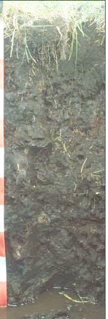
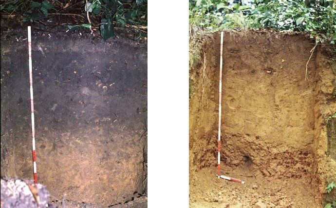

Bodems van de wereld
Van de voor de landbouw belangrijkste bodemtypen:-Verspreiding-Landschap en bodem-Bodembeheer in de landbouw
Inleiding
In een tijd dat optimale voedselproductie steeds belangrijker wordt bestaat er nog geen overzicht over hoe van de boer uit naar het beheer van de verschillende bodems van de wereld gekeken kan worden. Het volgende is een beknopte aanzet tot zoiets. Een verdere uitwerking is van belang.Het zijn de boeren die de voedingsgewassen moeten verbouwen. Schaars is de literatuur waarbij vanuit de boerenblik naar bodems wordt gekeken, maar nog schaarser zijn pogingen vanuit samenhangen naar de problematiek te kijken. In hoofdstuk 3 en 4 een poging dit wel te doen. Het doel is dus niet om tot in detail per situatie een gedetailleerd overzicht te geven, het doel is veel meer aandacht te vragen voor een blikrichting, waarbij het hele bodemprofiel centraal staat en de maatregelen per bodemtype in een grotere samenhang staan en daardoor gerichter kunnen worden toegepast.
De bodemvruchtbaarheid staat in grote delen van de wereld onder druk:
Verenigde Staten
teelt van gewassen die weinig plantenresten achterlaten zoals mais en soja. Gewasresten van mais worden gebruikt voor dierenvoedsel en energiewinning-Noord-west Europa: akkerbouw met steeds minder granen en grassen. Teelt van snijmais met te geringe organische stofaanvoer.
Oost-Europa
dalende organische stofgehalten door te intensief gebruik.
Azie en ZuidAmerika
kappen van regenwoud en teelt van soja die de bodem niet voldoende verzorgd. Slecht 15% van de palmolie wordt verantwoord geteeld.
Afrika
te intensieve begrazing. Teelt van gewassen die de bodem niet voldoende onderhouden.
Animatie Bodems van de Wereld
## Sterk verweerde tropische bodems (Acrisol)
Het belangrijkste bodemtype van de vochtige tropen en subtropen is de Acrisol. Het komt voor in gebieden met een glooiend tot heuvelachtig reliëf. Acrisols zijn gevormd op zuur gesteente. Er is een miljard hectare Acrisol op de wereld. Hiervan is de helft (500 miljoen hectare) geschikt voor teelt op akkers.
In de wat vlakkere gebieden komen Acrisols veel voor naast de vergelijkbare Ferralsols, die zijn gevormd op basisch gesteente. Er is 700 miljoen hectare Ferralsol op de wereld, waarvan 300 miljoen hectare geschikt is voor teelt op akkers. De eveneens vergelijkbare Lixisols zijn erosiegevoelige gronden met kleiuitspoeling. Hiervan is 435 miljoen hectare op de wereld, waarvan 150 miljoen hectare geschikt is voor teelt op akkers.
Vorming
Acrisolen zijn gevormd uit zure gesteenten, zoals graniet. Onder bos en zijn ze onder natte omstandigheden sterk verweerd. Een deel van de Acrisols ligt in droge gebieden en stam nog uit een vochtiger periode lang geleden.
Eigenschappen
Het bodemprofiel van een Acrisol is homogeen van opbouw, dus er zijn geen duidelijke lagen. Het belangrijkste kleimineraal in deze grond is kaoliniet. In vergelijking met andere kleimineralen, kan kaoliniet minder vocht en voedingsstoffen vasthouden. Aluminiumtoxiciteit komt veel voor op deze gronden. De vastlegging van fosfaat is een ander probleem.
Het belangrijkste kleimineraal in Acrisolen is kaoliniet. Dit heeft een aanzienlijk minder vochthoudend en voedingsstoffenvasthoudend vermogen dan andere kleimineralen.
Het bodemprofiel is homogeen van opbouw, er zijn geen duidelijke lagen. Aluminiumtoxiciteit komt veel voor op deze gronden. Verder is fosfaatvastlegging een probleem.


Landschap van een rode Acrisol in noordoost Thailand.

Bodemprofiel van een rode Acrisol in noordoost Thailand
Zandige bodems met weinig organische stof (Arenosol)
Arenosols zijn zandgronden die voorkomen in zeer koude tot zeer warme gebieden, zowel onder droge als natte omstandigheden. De bodems kunnen ontwikkeld zijn in recent afgezette zanden, in oudere verweerde zanden of in oud kwartsrijk materiaal. Ook de zandgronden van woestijnen en kusten behoren tot de Arenosols.
Vorming
In droge en semi-droge gebieden is het zand vaak gebleekt: het organische koolstofgehalte is er erg laag (in het algemeen lager dan 0,4 procent). Een platige structuur en verslempte bovengrond komen voor.
Eigenschappen
Een gebleekte bovenlaag heeft ongunstige eigenschappen voor landbouwkundig gebruik. Na neerslag kan de ondergrond hier droog blijven. Kieming van zaden wordt dan bemoeilijkt. Ook een platige structuur en verslemping belemmeren een goede kieming. In droge gebieden zijn grote gebieden daarom onbegroeid. Deze gronden zijn zeer gevoelig voor erosie.
Landbouwkundig gebruik
In droge gebieden is extensieve veehouderij de belangrijkste vorm van landbouw. Bij irrigatie worden de gebruiksmogelijkheden ruimer. In gematigde gebieden is akker- en weidebouw mogelijk, vooral wanneer aanvullende irrigatie in droge perioden mogelijk is. Arenols in de vochtige tropen zijn zeer arm aan mineralen en zeer gevoelig voor erosie.


Landschap in Brazilie op een Arenosol, location: Paraiba State, Mamanguape, 4km Z van Camaratuba River. Foto: ISRIC World Soil Information.

De Kalahari woestijn in Namibie. Foto LUH.

Bodemprofiel in de Kalahari woestijn. Foto LUH
Jonge rivier- en zeeafzettingen (Fluvisol)
Fluvisols komen over de hele wereld voor in periodiek overstroomde gebieden van alluviale vlaktes, rivierwaaiers, valleien en kwelders.
Vorming
Fluvisol verwijst naar het Latijnse woord voor rivier, maar Fluvisol sedimenten kunnen naast rivieren ook door meren en zeeën zijn afgezet. Fluvisols die gevormd zijn door rivieren, kunnen sterk in zwaarte variëren. Ze zijn gelaagd door verschillen in zwaarte en organische stofgehalte.
Eigenschappen
Fluvisols zijn jonge gronden met een geringe mate van bodemvorming. In het midden en lagere deel van rivieren afgezet zijn ze vaak grofzandig, in bassins afgezet veel zwaarder. Door stagnerend water of door overstromingen kunnen ze nat zijn. Hoger gelegen rivierterrassen zijn beter gedraineerd dan lagere delen. De meeste Fluvisols hebben roestvlekken door wisselingen in grondwaterstanden waarbij oxidatie en reductie elkaar afwisselen.
Landbouwkundig gebruik
Gebieden met Fluvisols zijn op grote schaal in gebruik voor de landbouw. De helft van de wereldbevolking leeft langs rivieren en kusten. Eenjarige gewassen, fruit en grasland komen voor. Bescherming tegen overstromen en drainage is gewoonlijk nodig. Sommige Fluvisols zijn extreem zuur en hebben hoge concentraties van toxisch aluminium. Vaak zijn ze evenwel kalkrijk en belemmert een sterke mineralisatie van organisch materiaal een goede humusopbouw. Koolstofrijke gewasresten van granen en grassen en koolstofrijke compost zijn essentieel voor een duurzame bodemvruchtbaarheid op deze basische gronden.


Bodemprofiel fluvisol in West Canada. Foto Agpal
Bruine bodems met wat meer organische stof (Cambisol)
Cambisols zijn bruine gronden met beperkte bodemvorming. In Europa liggen ze voornamelijk tussen de bodems van de subtropen en die van de meer noordelijk gelegen Podzolgronden. Gemengd bos is de meest voorkomende natuurlijke vegetatie. In noordelijk gelegen gebieden komen Cambisols veel voor in rivierafzettingen en windafzettingen. In tropen en subtropen komen ze voor op hellingen maar ook in rivierafzettingen. De grootste aaneengesloten oppervlakte Cambisols ligt in de afzettingen van het Ganges-Brahmaputra rivierengebied. In totaal zijn er ongeveer 1,2 miljoen hectare Cambisols, waarvan ca 500 miljoen hectare geschikt zijn voor teelt op akkers.
Vorming
Bij Cambisols heeft nog geen langdurige bodemvorming plaatsgevonden. Het moedermateriaal is matig tot licht verweerd. De organische stof is homogeen verdeeld over een redelijk dikke laag.
Eigenschappen
Omdat storende lagen meestal ontbreken en een wat dikkere organische-stof-houdende laag aanwezig is, zijn ze voor de landbouw redelijk tot goed te gebruiken. De meeste hebben een goede structuurstabiliteit, een goed watervasthoudend vermogen en goede mogelijkheden voor waterafvoer.
Landbouwkundig gebruik
Het landbouwkundig gebruik is sterk afhankelijk van het klimaat. De Cambisols van de gematigde zone kunnen zeer productief zijn. Bij steile hellingen komen graasweiden en houtteelt vaak voor. In droge gebieden worden ze na irrigatie veel gebruikt voor akkerbouw en oliehoudende gewassen. In tropische gebieden zijn Cambisols (een midden bodem) wat rijker dan de Acrisols en Ferralsols (jonge bodems).

Landschap cambisol in Maryland USA

Cambisol in Maryland USA.
Bodems met een dikke laag met organische stof (Zwarte aarde, chernozem)
Deze tekst is mede gebaseerd op teksten van de bodemkundigen A.J. Havinga en L. j. Pons
Chernozembodems zijn belangrijk voor de wereldvoedselvoorziening. Tarwe en mais zijn de belangrijkste producten. Het is interessant om te zien waarom ze zo vruchtbaar zijn: de wortels en niet het blad van de steppegrassen zorgden voor de humus. Grassen zijn de basis voor de bodemvruchtbaarheid. De humus is zeer stabiel door het hoge koolstofgehalte. De bodems zijn niet zuur. Aan het adsorptiecomplex zijn vooral calcium en magnesium te vinden. Het zijn de regenwormen die essentieel zijn voor dikke humushoudende laag doordat ze mede omdat ze voor de winter naar een diepere laag gaan de grond mengen.
Geografische verbreiding
In Europa en Azië: Een brede gordel van zuidwest Hongarije / Noord-Bulgarije naar het noordoosten tot ver in Siberië. Verspreid ook in centraal Europa o.a. Oostenrijk, Tsjechoslowakije en Duitsland. De oppervlakte in deze landen is 415 miljoen ha, waarvan 200 miljoen ha geschikt is voor teelt op akkers. ten zuiden van de chernozems liggen gronden met een minder dikke donkere bovengrond die bruin van kleur is. Dit zijn de kastanozems en beslaan 470 miljoen ha. In Noord-Amerika: Een gordel van noord (Noord-Dakota) naar zuid (Texas). Ten oosten van de chernozems komt een gordel voor van prairie gronden voor, van Minnesota tot in Texas. In Zuid-Amerika vooral in Argentinië in het gebied van de pampa’s.
Klimaat
Gebieden met warme, droge zomers en koude winters. Er valt niet veel neerslag; tussen 300 en 550 mm per jaar. ’s Winters als sneeuw; ’s zomers af en toe een (stort) bui. Er vindt weinig stroming van regenwater door het bodemprofiel naar de ondergrond plaats waardoor er weinig uitspoeling van voedingsstoffen is.
Moedermateriaal
Chernozems kunnen zich ontwikkelen in zeer verschillende moedermaterialen. De meest voorkomende zijn Ioess, mergels en andere min of meer kleihoudende gronden. Ook op kalkrijk fijn zand kunnen ze ontstaan.
Natuurlijke vegetatie
Steppegrassen: Stipa (vedergras) , Koeleria (fakkelgras), Festuca (zwenkgras). De beide laatste geslachten zijn ook in de flora van ons land vertegenwoordigd. verder graslandgrassen en een dikwijls rijke verscheidenheid aan kruiden. Naarmate de steppe in een drogere klimaatzone ligt loopt het aandeel der kruiden terug en gaan de steppegrassen zeer sterk overwegen.

Stipa, vedergras. Dit is een van de belangrijkste chernozem vormende grassen.

Een zwarte chernozem met een donkere laag van ruim 1 m. Deze chernozems ontstaan meer in het noorden onder relatief koude en natte omstandigheden. Grassen en kruiden leverden de organische stof.

Een bruine chernozem met een donkere laag van 80 cm. De chernozems liggen ten zuiden van de zwarte. Grassen waren overheersend bij de vorming van de bodem in het verleden.

Een kastanozem. De donkere laag is bruin tot bruinrood en veel dunner dan bij de chernozems. Deze chernozems liggen meer naar het zuiden waar het droger en warmer is. Korte ijle grassen die in de droge zomer verdroogden bouwden de humuslaag op.
Profielkenmerken
De zwarte chernozem met een dikke humuslaag
Een diep ontwikkelde chernozem heeft een 100 cm dikke humushoudende bovenlaag. De kleur is diepzwart en in droge toestand zeer donkergrijs van kleur. Van boven naar beneden neemt het gehalte aan organische stof geleidelijk af. Bijvoorbeeld van 8% bovenin tot 2 % op 100 cm. De organische stof is voornamelijk aanwezig in de vorm van mull humus en wel als kalkhumaten en kleihumusverbindingen. De humus is zeer resistent tegen biologische afbraak. Zijn adsorptiecapaciteit is zeer hoog.
De lutumfractie die vaak 15% van het gewicht is bestaat voor een belangrijk deel uit de kleimineralen illiet en montmorilloniet. Tezamen met de humus is er een hoge uitwisselingscapaciteit van 35 à 55 meq./100 g grond . Naar beneden daalt de waarde geleidelijk ten gevolge van de afname van humusgehalte.
De basenverzadiging is vooral door Calcium ingenomen, verder voor een deel door Magnesium. De pH is ongeveer neutraal (6,5 à 6 ,9).
De verweerbare primaire mineralen (veldspaten en glimmers) zijn slechts in geringe mate aangetast. De bij de aantasting vrijgekomen eenwaardige kationen zijn praktisch totaal uitgespoeld tot diepere lagen. De Calcium en Magnesium ionen zijn vooral gebonden aan het adsorptiecomplex.
In de bovenlaag is er een zeer intensieve biologische menging door regenwormen. Zij dragen bij aan de kruimelige of sponsachtige structuur. Kenmerkend is de aanwezigheid van zogenaamde krotovinen (letterlijk mollengangen), gangen en holen van kleine zoogdieren (veelal hamsters) , die zich duidelijk in de profielwand van een profielkuil aftekenen.
De poreuze structuur bezit een heterogeen poriënstelsel, dat ideale voorwaarden schept voor een goede lucht—waterhuishouding van de grond. Dank zij de aanwezigheid van hoogpolymere humusstoffen is de structuur zeer stabiel.
Onder de humushoudende bovengrond is er een kalkrijke horizont (C). Deze is bovenin lichtgeel van kleur en neemt naar beneden geleidelijk de strogele kleur van het moedermateriaal aan.
De ondergrond is vaak verrijkt met gips (CaSO4 ).
De voornaamste bron voor de levering van de organische stof is het wortelstelsel van de steppevegetatie. Deze vormt een diep, zeer dicht en enorm fijn vertakt geheel. In tegenstelling tot een bosvegetatie komt het afval van de bovengrondse delen hier op de tweede plaats.
De klimatologische omstandigheden, de sterke temperatuurswisselingen, de langdurige zomerdroogte en de grote basenvoorraad van de grond geeft een grote hoeveelheid van zeer stabiele (in hoge mate gepolymeriseerde en gecondenseerde humus met een lage C : N verhouding (ca. 10).
De humusafbraak is gering, doordat in de natte periode (sneeuwsmeltwater) in het voorjaar, de temperatuur laag is en de bacteriële activiteit gering is. Daardoor zijn de koolzuur en organische zuurvorming beperkt. Zuren worden bovendien grotendeels geneutraliseerd. De verwering van de primaire mineralen blijft dan ook beperkt en daarmee tevens de vorming van secundaire kleimineralen. Gezien het ongeveer neutrale tot zwak alkalische milieu ontstaan voornamelijk kleimineralen van de typen illiet en montmorilloniet.
Andere typen chernozems
Het hiervoor beschreven diepe type zwarte diepe chernozem wordt aangetroffen in dat deel van de steppegordel waar de klimaatomstandigheden voor de vorming van een diepe humeuze laag optimaal zijn. Door het klimaat zijn er naast steppe ook aaneengesloten bossen.
Natuurlijk zijn binnen de zeer brede en lange steppegordel de klimaatomstandigheden niet overal gelijk. Ze kunnen nog vochtiger zijn dan bij het hiervoor besproken chernozemtype, maar ook veel droger en warmer. Daarmee gepaard gaan verschillen in ontwikkeling van de chernozem.
Men kan de andere typen het best van de hiervoor beschreven diepe tsjernozem afgeleid denken door de invloed van het waterregime in de grond te bekijken. Dit wordt eveneens in hoge mate door het klimaat maar ook door de topografie van de bodem bepaald. Bij de drogere chernozemtypen is ook de aanwezigheid van zoute bodemlagen beneden het bodemprofiel van grote betekenis.
Het bodemvocht in een diepe tsjernozem heeft geen verbinding met het grondwater. Tijdens de infiltratie van regenwater in het voorjaar, worden de zouten, kalk als CaHCO3, opgelost en meegevoerd. Onder de humusrijke bovengrond vermindert de koolzuurspanning en slaat CaCO3 geleidelijk neer over een zeker traject. Daarbeneden precipiteren eerst gips en vervolgens de andere zouten. Zomers gaat de bodemoplossing ten gevolge van transpiratie en evaporatie in omgekeerde richting, zodat een deel der zouten weer naar boven wordt verplaatst. Ondanks het naar verhouding geringere opwaartse vochttransport is de verplaatsing van kalk niet onaanzienlijk. Daartoe draagt de hogere koolzuurspanning bij in de tijd dat de plantenfysiologische processen goed op gang gekomen zijn. Als resultaat van de op- en neergaande beweging ontstaat een kalkrijke horizont, die bovenin een sterke concentratie aan CaCO3 Iaat zien. Waar de infiltratie van regenwater sterker wordt dan de opwaartse vochtverplaatsing gaan kalkrijke en zoute horizont zich naar beneden verplaatsen en ontstaat er een kalkloze overgangshorizont. Ook gaat er een versterkte kleivorming optreden en onder meer extreme omstandigheden zelfs kleiverplaatsing, waardoor een kleiinspoelingshorizont ontstaat op de plaats van de kalkloze overgangshorizont (gedegradeerde chernozem of degraded chernozem) .
De beschreven ontwikkeling treft men in Europa in meer naar het noorden of westen gelegen streken aan, en in Noord-Amerika meer naar het oosten, waar het klimaat koeler en/ of regenrijker is. Maar ook lokaal in het meer centrale chernozemgebied, ter plaatse van hellingen op het noorden of onder bos, komt hij veel voor.
De prairie soils van Noord-Amerika zijn gedegradeerde chernozems. Veelvuldig zijn ze ontstaan in keileem en treedt pseudogley op. De pH (5,5 à 6) is lager. Het organische stofgehalte ook.
In drogere (300-1450 mm regen) en warmere klimaatomstandigheden in Europa naar het zuiden en in Noord—Amerika in westelijke richting is de beworteling minder intensief. Daardoor ontstaat een ondieper profiel met een geringer organische stofgehalte. Gaat het organische stofgehalte ook bovenin het profiel dalen dan vermindert als gevolg daarvan tevens de adsorptiecapaciteit en wijzigt zich ook de kleur van deze horizont, die kastanjebruin wordt. De neergaande waterbeweging gaat minder diep en de opwaartse is relatief versterkt. De kalkrijke horizont verplaatst zich daardoor omhoog tot gedeeltelijk in de bovengrond wat schadelijk is voor diep wortelende gewassen. Men spreekt dan van een gewone tsjernozem bij een humusrijke laag van 50 cm dikte en bovenin 5% organische stof en kastanjebruine met minder dikke humusrijke laag en minder hoog organische stofgehalte. Onder nattere omstandigheden kunnen er ook gleyverschijnselen (roestvlekken) ontstaan. Deze vochtiger typen worden landbouwkundig hoog gewaardeerd. Voorwaarde is echter, dat het grondwater geen grotere hoeveelheid opgeloste zouten bevat. In dat geval kan er namelijk gemakkelijk een zeer sterk ontwikkelde zouthorizont op geringe diepte onder de A horizont ontstaan ofwel een meer of minder sterk verzilte A horizont.
Landbouwkundige waardering en gebruik
De chernozems hebben een uitzonderlijk goede fysische vruchtbaarheid. De chemische vruchtbaarheid is matig tot redelijk goed. Om een goede opbrengst te verkrijgen, moet in het algemeen met N, P en K worden bemest. Vele chernozemgronden bevatten echter van nature genoeg P en/of K. De fosfor is voornamelijk organisch gebonden , de kali aan de kleimineralen geadsorbeerd. De voorraadvorming is een gevolg van de weliswaar zwakke, doch gedurende bijzonder lange tijd plaats gehad hebbende ontleding van primaire mineralen, zonder dat er uitspoeling plaat vond.
Sporenelementen kunnen, zoals te verwachten bij hoge pH, in sterke mate zijn vastgelegd, waarom bijvoorbeeld Thomasslakkenmeel, ondanks zijn geringere oplosbaarheid, dikwijls gunstiger werkt dan superfosfaat. Indien voldoende neerslag valt (zoals b.v. veelal in Duitsland) is de geschiktheid van de chernozern voor akkerbouw moeilijk te overtreffen.
Ook veeleisende gewassen als tarwe en suikerbieten geven dan de hoogste opbrengsten. In typische chernozemgebieden, zoals bijvoorbeeld de Oekraïne, moet men vanwege vochttekort in de zomer met een geringere opbrengst genoegen nemen. De vochthuishouding kan echter in belangrijke mate worden verbeterd, niet alleen door te bevloeien of te beregenen, maar ook door gedeeltelijke bebossing. Er worden dan smalle stroken bos van een zeer open structuur, op regelmatige, niet te grote afstanden van elkaar, aangelegd, terwijl daartussen nog weer smalle stroken hoge gewassen (zonnebloemen, mais) worden gezaaid, die men de winter over Iaat staan. Aldus vermindert de windsnelheid, hoopt de sneeuw zich op, zonder te verwaaien, vriest de grond minder diep door, ontstaat in het voorjaar een veel grotere vochtvoorraad in de grond, verdampt er ’zomers meer vocht, vooral ook uit de diepere lagen afkomstig (boomwortels reiken diep) , neemt ’s zomers de luchtvochtigheid toe en zijn er meer buien. Het microklimaat van de bodem en het macroklimaat van een gehele streek kunnen daardoor dusdanig verbeteren, dat er een aanzienlijke productievergroting mogelijk is. Een bijkomende gunstige omstandigheid is, dat de erosie, die zeer ernstige vormen kan aannemen, wordt beteugeld.
Verwante bodemtypen
Het semi-aride klimaat en de steppebegroeiing zijn van zo overwegende betekenis voor de bodemvorming dat ook in bodems met een extreme textuur (zand, zware klei) of een hoog gehalte aan venig materiaal profielen kunnen ontstaan die nauw verwant zijn aan de chernozem.
Parachernozem
In moedermateriaal bestaande uit kalkloos, niet te fijn zand (bijvoorbeeld rivierstuifzand) ontstaat een bodemprofieI met een slechts dunne humeuze laagvan 40 tot 45 cm dik die vrij weinig organische stof bevat (ca. 2%) en een betrekkelijk bruine kleur heeft. Hoewel mull als humusvorm voorkomt en de biologische activiteit matig tot vrij goed is, bezit de grond weinig structuur, is hij zeer waterdoorlatend en derhalve sterk verdrogend. Deze Landbouwkundig slechte, sterk voor winderosie gevoelige grond, beslaat hier en daar grote oppervlakten.
Smonitza
Een bodem in zware klei met een diepe, zeer donkere bovengrond met een betrekkelijk laag organische stofgehalte ( < 3%). De uitwisselingscapaciteit van de grond is uiteraard hoog (b.v. 60 meq./IOO g grond), evenals de basenverzadiging met vooral calcium. Aangezien de kleifractie voornamelijk uit montmorilloniet bestaat, geeft het hoge tot zeer hoge kleigehalte aanleiding tot enorme zwel- en krimpverschijnselen in natte en droge perioden en er ontstaat een meer of minder sterk ontwikkeld gilgayreliëf (polygonen omgeven door krimpscheuren). Onderin de humushoudende bovengrond horizont komen vaak gleyverschijnselen voor (roestvlekken).
Het bodemtype is zeer algemeen in de Balkan (het Servische woord smoLa — pik), maar ook buiten Europa, waar het onder allerlei namen in de subtropen en tropen voorkomt (Black cotton soil in India). Op deze vertisol (Amerikaanse classificatie) teelt men, vanwege zijn slappe consistentie in de natte tijd en zijn keiharde consistentie in de droge tijd, bij voorkeur gras. Waar in de droge tijd genoeg vocht beschikbaar is wordt echter ook tarwe en katoen geteeld.
Anmoorschwarzerde
(Oostenrijkse benaming)
In Oostenrijk en Hongarije komen grote gebieden voor met kalkrijke venige gronden. Grondwaterstandsverlaging als gevolg van het reguleren van rivieren en het verbeteren van de afwatering door middel van sloten en kanalen had hier tot gevolg dat er een intens zwarte bovengrond ontstond met een vrij hoog gehalte aan organische stof boven een bijna organische stofloze ondergrond. De humus in de bovengrond bestaat voornamelijk uit mull humus, maar bezit onderin vaak nog een zeker anmoorig karakter, hetgeen soms te zien is aan het voorkomen van slakkenhuisjes. De bovengrond heeft vaak een hoog kalkgehalte, een zeer hoge basenverzadiging, voornamelijk calcium en er is een intensieve biologische menging. In depressies komen vaak verzilte typen voor.
In landbouwkundig opzicht is de Annoorschwarzerde een uitstekende grond en wel speciaal voor akkerbouw en groenteteelt (suikerbieten, tomaten, paprika). Hij bezit een gunstige vochthuishouding, maar is zeer gevoelig voor verstuiven. Windsingels kunnen dit tegengaan.
Het ontstaan van de chernozems
Chernozems kunnen op verschillende wijzen ontstaan. Reeds voor het holoceen zijn chernozems gevormd. Dit is aangenomen op grond van waarnemingen direct onder de humushoudende bovengrond. Op sommige plaatsen bleken spleetvormige verdiepingen van deze horizont in de C door te steken. Dit verschijnsel kan alleen onder periglaciale omstandigheden ontstaan.
In de Russische Literatuur worden laat glaciale humeuze gleygronden (meadow soils) vermeld, die in de loop van het oudere Holoceen tot echte chernozems zijn omgevormd.
Voor een groot deel van het chernozemgebied (het bos-steppegebied), wordt op theoretische gronden verondersteld, dat er oorspronkelijk een meer of minder open bos voorkwam. De neerslag wordt daarvoor voldoende geacht. Het ligt voor de hand aan te nemen dat dit bos door menselijk toedoen (branden, kappen, veeweiden) is vernietigd, waarna de steppe het terrein veroverde. Door het verdwijnen van het bos werd het klimaat droger (zie hiervoor).
In de van nature droge streken zal vanaf het begin van het Holoceen de steppe vermoedelijk hebben bestaan.
Volgens recente literatuurgegevens zou echter ook onder bos een chernozem kunnen ontstaan, indien het klimaat net niet te droog is voor de groei van het bos.

Verspreiding chernozems op de wereld

Landschap op chernozem in Rusland
Bodem met ingespoelde zure humus (Podzol)
Podzolvorming is gebonden aan regenrijke gebieden in zone rondom de Noordpool, maar komt op extreem arme gronden ook voor in de tropen. Het zijn hoofdzakelijk naaldbomen die de vegetatie vormen. De bodemsoort is voornamelijk zand. Bij de Podzolen in de tropen wordt de vegetatie gevormd door boomsoorten met een ondiep wortelstelsel. In totaal zijn er in de noordelijke streken 485 miljoen hectare Podzol-gronden en in de tropen ongeveer 10 miljoen hectare.
Vorming
De Podzolgronden die we in een kring rond de Noordpool vinden, waren aanvankelijk meestal gronden op een wat rijker materiaal. Door uitspoeling van mineralen zijn ze arm en zuur geworden. De vegetatie paste zich hierbij aan en er ontstond een zure humus die uitspoelde en in een wat diepere laag weer inspoelde. Bovenop de grond ligt in een natuurlijke situatie een strooisel-laag. Hieronder bevindt zich een lichtgekleurde uitspoelingshorizon (laag) die askleurig is. Daaronder een laag die zwart of bruin is door inspoeling van humus. Verder is er inspoeling van ijzer- en aluminiumoxiden.
Eigenschappen
Podzolen zijn arm door uitspoeling van mineralen en hebben een sterk verdichte inspoelingslaag. Aluminium toxiciteit kan voorkomen.
Landbouwkundig gebruik
Podzolgronden hebben beperkte mogelijkheden voor agrarisch gebruik. Ze hebben wel gebruiksmogelijkheden voor bosbouw en extensieve veehouderij.De gebruiksmogelijkheden worden ruimer door ontwatering, bodembewerking tot ca 40 cm of meer, bekalken en aanvoer van meststoffen. Er zijn relatief veel meststoffen nodig en het gevaar van milieuschade door uitspoeling van nitraat en fosfaat is groot. Mechanisch losmaken van de ondergrond en teelt van bodemverzorgende gewassen is van belang. Granen, gras/klaver en dierlijke mest kunnen de eenzijdige oorspronkelijke humus compenseren.


Berkenbos op podzol in Canada

Podzolprofiel onder berkenbos in Canada
Veenbodems (Histosol)
Histosols zijn veengronden die vooral voorkomen in koude streken rond de Noordpool, maar ook in gematigde streken en in de tropen. In koude gebieden is het vooral veenmosveen. In gematigde streken vooral riet-zeggeveen en in de vochtige tropen mangrove- en moerasbosveen. De meeste veengronden liggen in het laagland, maar ook in bergachtige gebieden worden ze aangetroffen.
Vorming
Een veengrond ontstaat doordat plantenresten traag worden afgebroken. De oorzaak kan zijn:
- lage temperatuur
- waterverzadiging van de grond
- extreem zure omstandigheden
- extreem mineraalarme omstandigheden
- hoog zoutgehalte
- toxische organische stof
Eigenschappen
De plantenresten die het veen vormden komen in de bovengrond vaak in contact met zuurstof. Ze worden door het bodemleven omgezet in een wat genoemd wordt veraarde grond, waarin plantenresten niet meer als zodanig te herkennen zijn. Deze laag is potentieel goed doorwortelbaar voor landbouwgewassen. Omgezet organisch materiaal kan ook uitspoelen en op wisselende diepte een inspoelingslaag vormen.
Landbouwkundig gebruik
Vanwege de slechte ontwatering zijn veengronden vaak moeilijk in cultuur te brengen. Wanneer in cultuur brengen wel lukt, kunnen ze zeer productief zijn. Veehouderij is een belangrijke gebruiksmogelijkheid. Fruitteelt is soms ook mogelijk. Uitdrogen en vervolgens verstuiven van het materiaal kan een probleem zijn. Verdichting en verdwijnen van het materiaal door mineralisatie kunnen ook een probleem zijn.
De mogelijkheden om tot een bruikbare landbouwgrond te komen liggen vooral in de gematigde zone. Interessant is dat organische stof meestal als essentieel voor een vruchtbare bodem wordt gezien. Bij veengronden is organische stof in overmaat aanwezig en vaak een probleem. Enerzijds vanwege de bewerkbaarheid, anderzijds vanwege de eigenschappen van de organische stof. Veengronden laten duidelijk zien hoe belangrijk de kwaliteit van de organische stof is voor een vruchtbare bodem. Aanvoer van organische stof met een hoger percentage aan verteerbaar stikstofrijk organisch materiaal is van groot belang om een veengrond, zowel in akkerbouw als grasland, productief te laten zijn.
In de tropen wordt veel veen door branden ontgonnen. Na enkele jaren is de vruchtbaarheid verdwenen en wordt het land weer verlaten. De laatste decennia wordt veel veen gebruikt voor teelt van de oliepalm en verder ook voor de winning van houtpulp van acacia- en eucalyptussoorten. Tegen deze teelten zijn bezwaren in te brengen maar ze zijn minder desastreus voor het veen dan akkerbouw en gras met een goede ontwatering.


Landschap op een histosol in Noord-Europa

Histosol in Noord Europa
Donkere oude tropische cultuurgronden in Zuid-Amerika (Anthrosol, Terra Preta)
Tussen 18.000 en 15.000 jaar geleden trokken mensen uit Siberië via Alaska Amerika binnen. Tussen 13.000 en 11.000 jaar werd het Amazonegebied bereikt. Men leefde lange tijd van jacht en verzamelen van plantaardig materiaal. Tot recent werd aangenomen dat landbouw ongeveer 2000 jaar geleden zijn intrede deed. Dit blijkt al 8000 jaar eerder het geval te zijn, dus ca. 10.000 jaar geleden.

Ca. 10.000 jaar geleden vestigden de eesrste mensen zich op hogere gedeelten tussen rivieren in het Amazonegebied. Gedurende duizenden jaren vond verdere ophoging plaats. Er ontstond een dikke laag vruchtbare grond. De lagere delen tussen de hogere boseilanden waren in de het ene deel van het jaar te nat en het andere deel te droog en de grond werd dan keihard.
De eerste landbouw in Noord- en Zuid=Amerika vond plaats in het Amazonegebied. Geteeld werden maniok, zoete aardappelen, wilde rijst, chilipepers, bonen, pompoenen en pinda’s. Onderzoekers uit Europa, Noord- en Zuid-Amerika (Universiteiten Bern, Exeter, Barcelona en Pennsylvania) zijn zo’10 jaar geleden gestart met onderzoek naar de oude vormen van landbouw. Toen de Spanjaarden het gebied veroverden is vooral door ziekten die ze meenamen uit Europa de hele landbouwcultuur verdwenen. Men nam aanvankelijk aan dat de landbouw zo’n 2000 jaar geleden gestart was. Uit het recente onderzoek blijkt dat dit ca. 10.000 jaar geleden was.
Onder meer In Bolivia vond de landbouw in natte gebieden plaats. In de natte tijd woonde men op hoger gelegen “boseilanden”. Er zijn duizenden van deze boseilanden gevonden. De bovengrond werd aangevuld met afval. Na verloop van tijd ontstond er een dikke vruchtbare laag van 1 tot 2 meter dik. Uit stuifmeelonderzoek blijkt dat naast teelt op de vruchtbare akkers ook, wat wij nu noemen, een soort voedselbos werd onderhouden. De vruchtbare donkergekleurde akkers, Terras pretas, komen over het hele Amazonegebied voor.
De oudste maniokresten die men vond waren 10.350 jaar oud. Pompoen 10.250 en mais 6850 jaar

Een hoger gelegen “Boseiland”naast een lager gelegen gebied. Foto J. Capriles, PSU en P. Zuidmeer, UB.
De Terra preta bodem
De Terra preta bodem is sterk door de mens beïnvloed. Ze heten daarom Anthrosolen. Anthro betekend mens. Onze enkeerdgronden horen tot dezelfde groep.

Links de humusrijke Terra preta bodem, rechts een niet door de mens verrijkte bosbodem. Foto WRB.
De Terra pretabodems zijn gevormd door de indiaanse bevolking die voor Columbus in het Amazonegebied kwam. Hoe daar destijds landbouw werd gedreven is nu nergens meer te zien.
Wel is bekend waarmee de bodems zijn opgebouwd. Dat zijn etensresten en ander afval van de maaltijdbereiding, fecaliën van mens en dier, botten, visgraat en houtskool uit smeulend vuur. Dit materiaal werd in de buurt van de nederzetting gedeponeerd of gecomposteerd en ondergewerkt.
De Terra pretabodems komen voor in de wat minder dicht beboste Amazone en steeds langs waterwegen. De gemiddelde grootte van een Terra pretagebied is ca 20 ha., maar kan ook veel groter zijn tot 400 ha. Er zijn ook kleinere langwerpige gebieden. Ook in Ecuador, Peru, Frans Guana en Zuid Afrika komt Terra preta voor.
Het organische stofgehalte van de bodem kan tot 14% bedragen. Het organische stofgehalte is het hoogst dicht bij de nederzetting. Er is een onderscheid tussen akkers die speciaal werden bemest en akkers die meer als een bijproduct organisch materiaal kregen. Het proces bestond uit:
- aanvoer van houtskool
- vorming van humus
- groei van micro-organismen en bodemdieren
Houtskool is ontstaan uit natuurlijk organisch materiaal dat gedehydrateerd is en een zuurstof/ koolstofverhouding heeft van minder dan 60. De chemische structuur omvat polycyclische aromatische koolwaterstoffen.
Literatuur
Zuidmeer, E.P., 2021. Het regenwoud als eetbaar bos. Archeologie magazine 02-2021 p. 57-59.
Wikipedia EN, 2012: Terra Preta.